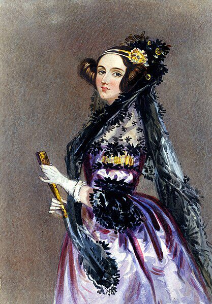

Ada Lovelace

Ada Lovelace (1815-1852) fue una matemática y escritora británica. Se le considera la primera programadora de la historia por su trabajo con la máquina analítica de Charles Babbage.
Logros destacados
- Desarrolló el primer algoritmo pensado para ser procesado por una máquina.
- Compredió la capacidad de las computadoras para ir más allá de los cálculos matemáticos.
- Su trabajo sentó las bases de la informática moderna.